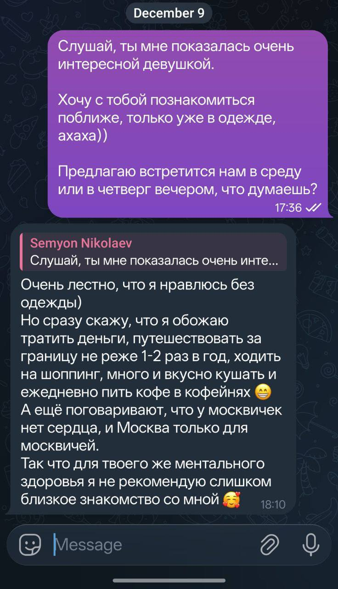

Исходный скриншот

Telegram
messenger
Разметка сообщений
ПРАВО17:36текст
Слушай, ты мне показалась очень интересной девушкой. Хочу с тобой познакомиться поближе, только уже в одежде, ахаха)) Предлагаю встретиться нам в среду или в четверг вечером, что думаешь?
ЛЕВО18:10текст
Ответ на:
Слушай, ты мне показалась очень инте...
Очень лестно, что я нравлюсь без одежды) Но сразу скажу, что я обожаю тратить деньги, путешествовать за границу не реже 1-2 раз в год, ходить на шоппинг, много и вкусно кушать и ежедневно пить кофе в кофейнях 😁 А ещё поговаривают, что у москвичек нет сердца, и Москва только для москвичей. Так что для твоего же ментального здоровья я не рекомендую слишком близкое знакомство со мной 🥰
Вывод воркфлоу · формат ТЗ
Тип платформы: Telegram Пользователь слева: Девушка Пользователь справа: Semyon Nikolaev Дополнительно: Кастомная тема Telegram Разметка сообщений [ПРАВО 17:36 текст] Слушай, ты мне показалась очень интересной девушкой. Хочу с тобой познакомиться поближе, только уже в одежде, ахаха)) Предлагаю встретиться нам в среду или в четверг вечером, что думаешь? [ЛЕВО 18:10 текст {Ответ на: "Слушай, ты мне показалась очень инте..."}] Очень лестно, что я нравлюсь без одежды) Но сразу скажу, что я обожаю тратить деньги, путешествовать за границу не реже 1-2 раз в год, ходить на шоппинг, много и вкусно кушать и ежедневно пить кофе в кофейнях 😁 А ещё поговаривают, что у москвичек нет сердца, и Москва только для москвичей. Так что для твоего же ментального здоровья я не рекомендую слишком близкое знакомство со мной 🥰